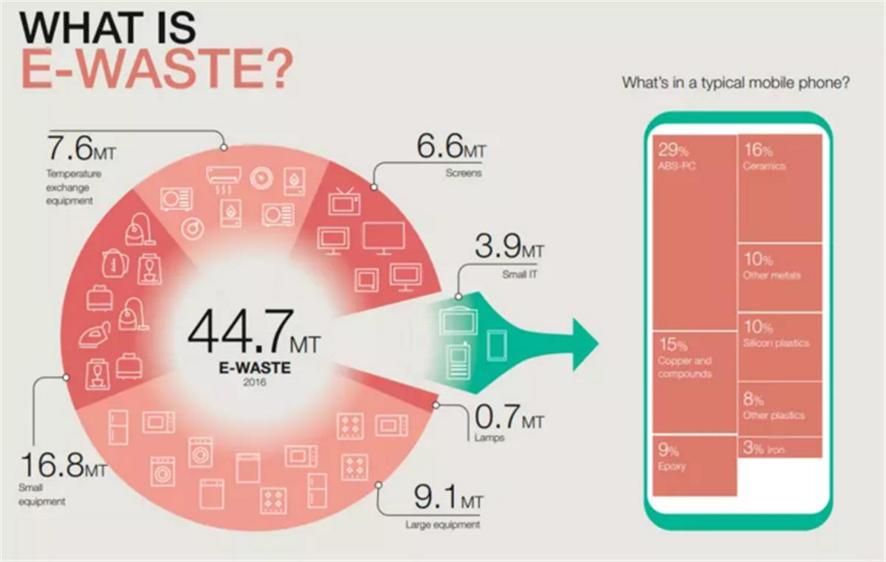
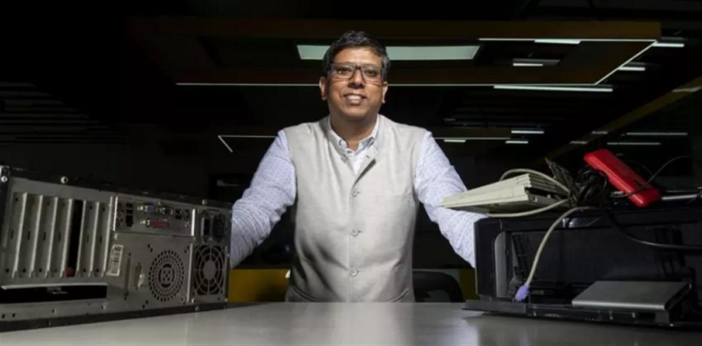
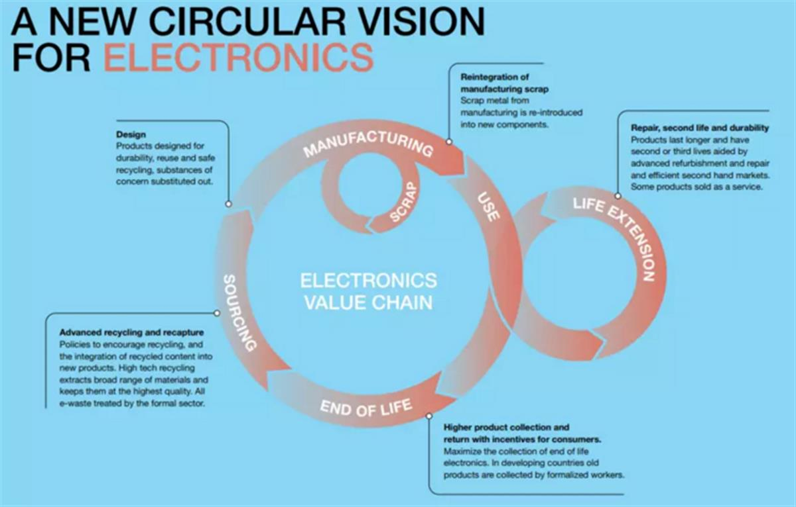

Every year, India generates 3.2 million metric tons of old smartphones, laptops, monitors and more. Image: Microsoft
Every year, India generates 3.2 million metric tons of old smartphones, laptops, monitors and more. Image: Microsoft
How a start-up in India is pioneering a way to tackle the global e-waste problem
- Electronic waste is one of the world’s fastest-growing environmental challenges – and opportunities.
- Currently the world is only processing 20% of e-waste appropriately.
- Indian start-up, Karo Sambhav, is helping to tackle the country’s giant e-waste challenge.
- The organization uses apps and image recognition to track e-waste shipments, increasing trust in its services.
- Microsoft, which is investing millions in closed-loop e-waste solutions, provides the cloud software to support Karo Sambhav.
- The World Economic Forum’s ‘New Circular Vision for Electronics’ offers e-waste solutions.
“Make it possible.” That’s the translation of Karo Sambhav, the Hindi name for a start-up that’s on a mission to clean up India’s giant electronic waste mountain.
Every year, the country generates 3.2 million metric tons of old smartphones, laptops, monitors and more. Much of it is recycled, but with little regulation, in often dirty and dangerous conditions.
Have you read?
- We generate 125,000 jumbo jets worth of e-waste every year. Here’s how we can tackle the problem
- The world’s e-waste is a huge problem. It’s also a golden opportunity
- A New Circular Vision for Electronics, Time for a Global Reboot
Karo Sambhav wants to bring manufacturers, distributors and recyclers together to coordinate their efforts to tackle e-waste, creating a more sustainable, circular economy. And Microsoft – which itself aims to generate ‘zero waste’ by 2030 – is providing the technology behind it.
The UN has warned of an e-waste ‘tsunami’ unless more is done to tackle the world’s fastest-growing waste stream – one which reached 48.5 million tonnes in 2018. The World Economic Forum’s New Circular Vision for Electronics argues that it’s time for a ‘global reboot’to accelerate the solutions – and opportunities – that lie buried in this toxic mountain.
India’s challenge
India’s e-waste problem is complex. The nation’s burgeoning, tech-savvy economy has created one of the world’s biggest electronics markets – together with plenty of used and unwanted goods. Yet in a city like New Delhi there is no shortage of small workshops, recycling everything from cables to motherboards.
The government has acted, too: in 2012 new e-waste management rules were introduced, compelling electronics companies to recycle their products.
Taken together, these forces should be in harmony. Yet still just 2% of the country’s electronics are being recycled – and where they are, workers often have little protection, using acid baths to extract precious metals from e-waste.

E-waste is found throughout the modern economy. Image: Global E-waste Monitor, 2017, WEFSomething isn’t working – and Karo Sambhav founder Pranshu Singhal believes he has diagnosed the problem, and found the cure.
“The whole ecosystem, right from collection channels to dismantling and recycling companies to organizations that utilize secondary materials for new product creation, has to collaborate,” he tells Microsoft Stories India. “Only then can we solve the problem at scale, because it is not possible to tackle this problem alone.”

Pranshu Singhal founded Karo Sambhav as a sustainability “movement”. Image: MicrosoftTechnology and trust
Singhal realized his team would need to build trust with the important scrap merchants – the ‘aggregators’ – in cities like New Delhi. Karo Sambhav’s staff moved into these neighbourhoods and slowly formed relationships. However, they needed more than goodwill.
The teams began to document and track aggregators’ e-waste shipments’ electronically. Team members now upload photographs and other details onto an app – barcoding every item in transit. The information is then hosted on Microsoft’s Azure cloud platform. Image recognition, provided by Azure Cognitive Services, also makes sure what’s on the bill tallies with what’s on the truck – at every stage of the transaction.
The result has been rapid expansion for Karo Sambhav – now working with hundreds of companies, government institutions, 5,000 informal sector aggregators and 800 repair shops. In 2018, it collected and sent around 12,000 metric tons of e-waste for recycling.
And for collectors and recyclers, life has also changed. “Business has improved a lot,” aggregator Suhaib Malik tells Microsoft. “We don’t even have to break down the keyboards anymore,” he says. “We just hand them over as is.” Smaller waste pickers are also given assistance to comply with tax registrations and keep on top of paperwork – integral to Singhal’s vision of an improving ‘movement’.

The Forum believes electronics can be a more sustainable industry. Image: WEFA new global vision
The solutions Karo Sambhav is pioneering in India show some of the ways the world can tackle the vast e-waste challenge at a global level.
Improved product-tracking, as well as take-back schemes, could help create a recycling chain that works better – for the planet and for those involved in the process.
Technology could also help clear up its own mess. The Forum and e-waste experts point to developments in the cloud and the internet of things (IoT) that could help “dematerialize” the electronics industry. We are forecast to own fewer things in future, and instead to lease technology as a service – creating greater incentives for manufacturers to repurpose and reuse.
Yet, at present, the world is still only processing around 20% of e-waste appropriately. If the $62.5 billion annual value of e-waste is to be fully utilized, companies, recyclers and consumers need to learn from Karo Sambhav and work together better – and faster.
SOURCE: WORLD ECONOMIC FORUM